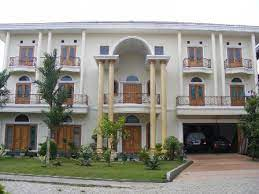
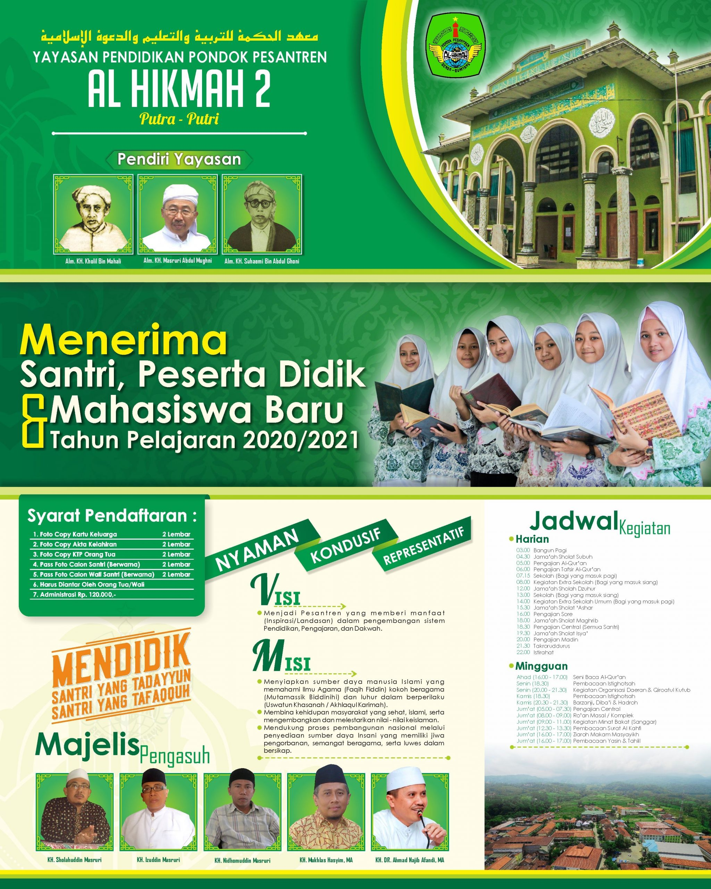

Sejarah
KH. Cholil dan KH. Suhaemi terus berjuang bahu membahu membangun Pesantren. Tidak sia-sia pembinaan yang dilakukan selama bertahun-tahun oleh beliau berdua. Hal ini terbukti pada tahun 1932, dari sejumlah santri yang menghafal Al-Qur’an sudah ada lulusan santri yang khatam bil ghoib. Dengan prestasi inilah pesantren Al-Hikmah mulai mencuat namanya ke berbagai daerah. Seiring dengan perkembangan tersebut, maka kegiatan-kegiatan Pesantren menjadi lebih komplek dan semarak. Kegiatan yang ada tak hanya sebatas menghapal al-Qur’an tetapi sudah dibarengi dengan pendalaman dan pengajian kitab-kitab kuning oleh tenaga-tenaga muda alumnus dari berbagai pesantren yang salah satunya Ust. Faozan Zaen dari Rembang (sebagai santri yang tahaffudz sekaligus pengajar kitab kuning).
Penyelenggaraan pendidikan Al-Hikmah hingga tahun 1947, dapat dikatakan berkembang pesat. Bahkan selama periode itu, pihak pesantren juga sempat mengembangkan program secara lebih beragam yaitu bidang Qiraatul kutub, Qiraatul Qur’an bit Taghoni (membaca Al QUr’an dengan dilagukan), sistem madras (klasikal), mejelis taklim untuk umum, dan dakwah keliling ke beberapa daerah. Namun perkembangan lembaga pendidikan itu sempat terhenti. Terutama setelah peristiwa pembakaran pondk dan pembunuhan sejumlah ustadz dan santri oleh Penjajah Belanda, tahun 1947-1948. Diantara para ustadz yang gugur adalah KH. Ghozali, H. Miftah, H. Masyhudi Amin bin H. ANimah, Sukri, Daad, Wahyu, Siroj dll.
Selama tujuh tahun berikutnya, laju perkembangan terhenti. Tindakan ini terpaksa dilakukan untuk menghindari penangkapan yang dilancarkan oleh Belanda. Selama tujuh tahun itu pula, Kiai Suhaemi mengungsi ke tempat yang lebih aman, sedangkan secara diam-diam KH. Cholil bersama menantunya KH. Ali Asy’ari dan kawan-kawan melestarikan secara diam-diam lembaga pendidikan yang ada. Masuk di tahun 1952, setelah kondisi relatif lebih stabil dan aman, asrama Pesantren yang sebelumnya sempat hancur dibangun kembali. Sebagian dibangun untuk menetap para santri, sedangkan sebagian lagi digunakan untuk mendirikan madrasah ibtidaiyah.
Kini, setelah mengalami pasang surut perkembangannya, Al-Hikmah telah mencatat kemajuan pesat. Lembaga pendidikan ini menempati areal seluas enam hektar. Melihat jumlah santri yang kian bertambah, guna memaksimalkan bimbingannya, Pondok Pesantren Al-Hikmah membagi kepengasuhannya menjadi PP. Al-Hikmah 1 yang diasuh oleh KH. Soddiq Suhaemi ( putra alm. KH. Suhaemi), serta PP. Al-Hikmah 2 yang diasuh oleh Majelis Pengasuh Pesantren (Putra-Putri alm. KH. Mochammad Masruri Abdul Mughni (cucu KH. Cholil). Tidak kurang sekitar 5000 orang santri mondok di Al-Hikmah saat ini.
Pendaftaran
Pelaksanaan pendaftaran dan kedatangan santri baru dilakukan dengan menerapkan protokol kesehatan pencegahan covid-19 dengan ketat, yang diantaranya:A. Seluruh santri baru wajib membawa surat keterangan uji tes (Genose/Rapid Test/Antigen/ Swab dengan hasil negatif.B. Setiap santri hanya boleh didampingi 2 orang wali santri selama di area pondok pesantren.C. Wali santri dilarang untuk memasuki asrama santri putra maupun putri.3.Bagi calon peserta didik yang belum mendaftar dan membayar pondok dipersilahkan untuk menyelesaikan pendaftaran secara online di psb.alhikmahdua.net
Lokasi

Pondok Pesantren Al Hikmah 2 berlokasi di dusun Benda, Kecamatan Sirampog, Kabupaten Brebes, Jawa Tengah.